Всероссийская конференция «Актуальные вопросы изучения и сохранения биологического и ландшафтного разнообразия юга России»
В период с 8 по 11 октября 2014 г. в Симферополе на базе Крымского федерального университета им. В.И. Вернадского (КФУ) состоялась Всероссийская научно-практическая конференция «Актуальные вопросы изучения и сохранения биологического и ландшафтного разнообразия юга России», посвященная 90-летию со дня рождения крымского орнитолога Ю. В. Костина.
На конференции были представлены пленарные и секционные постерные доклады. Рабочий язык конференции – русский. Предусматривалась очная, заочная и дистанционная (on line) формы участия. Что примечательно: организационный взнос для участников не был предусмотрен; проведение конференции основывалось исключительно на энтузиазме организаторов!
Материалы конференции (Сборник тезисов) планируется издать в электронном виде, а наиболее интересные работы опубликовать в журнале КФУ «Экосистемы».
Первый день работы был посвящен пленарным докладам, потом прошли секционные выступления по:
- биоразнообразию растений;
- биоразнообразию животных;
- биоразнообразию Каспийского, Черного и Азовского морей;
- ландшафтному биоразнообразию
Хотя Конференция была посвящена 90-летию со дня рождения крымского орнитолога Юрия Костина, значительная часть докладов были по растениям, уникальной флоре полуострова, что, в общем, закономерно: Крымская школа ботаники имеет глубокие исторические корни и всемирно известна.
Ученый секретарь Московского зоопарка, КБН, координатор природоохранной программы ЕАРАЗА «Сохранение кудрявого и розового пеликанов» Р.М. Аношин выступил с докладом «О современном состоянии популяций кудрявого и розового пеликанов в регионе Маныча, в котором докладчик изложил материалы по современным проблемам данной группы птиц и причинам их возникновения, а также о путях их решения.
После окончания конференции состоялась экскурсия для участников в Ялтинский горно-лесной заповедник.
Фотографии с конференции:
 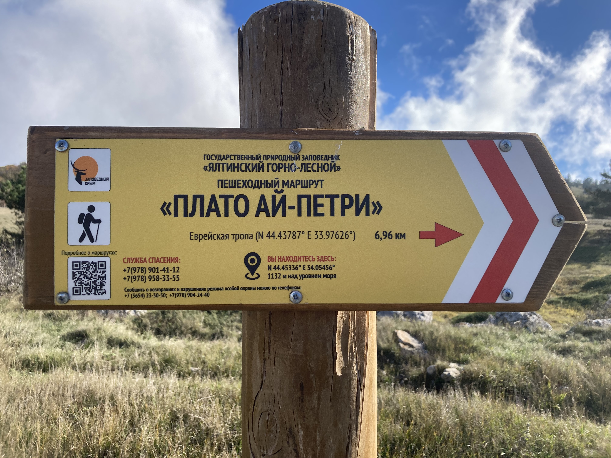
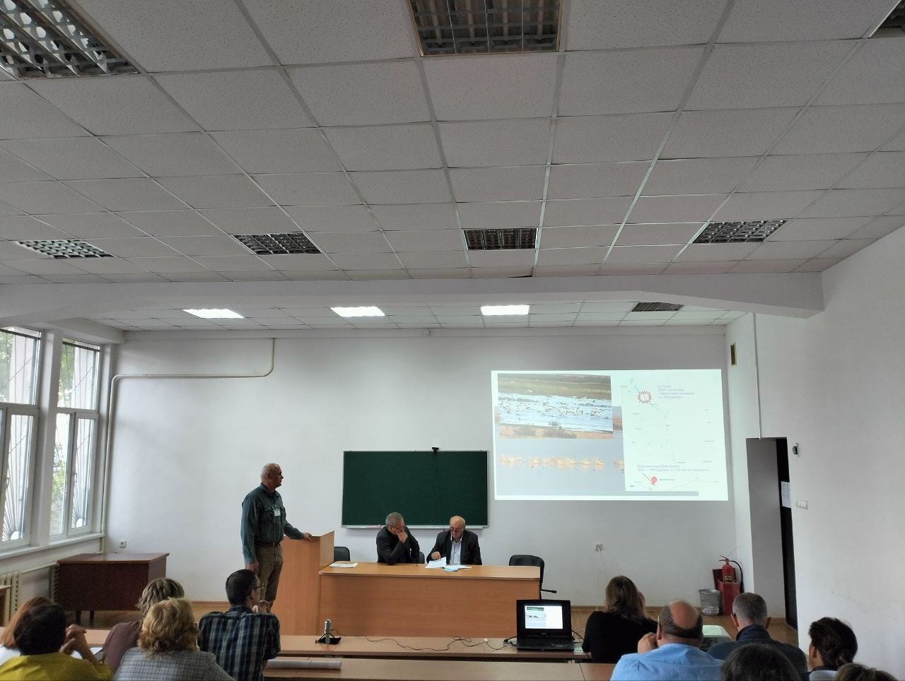
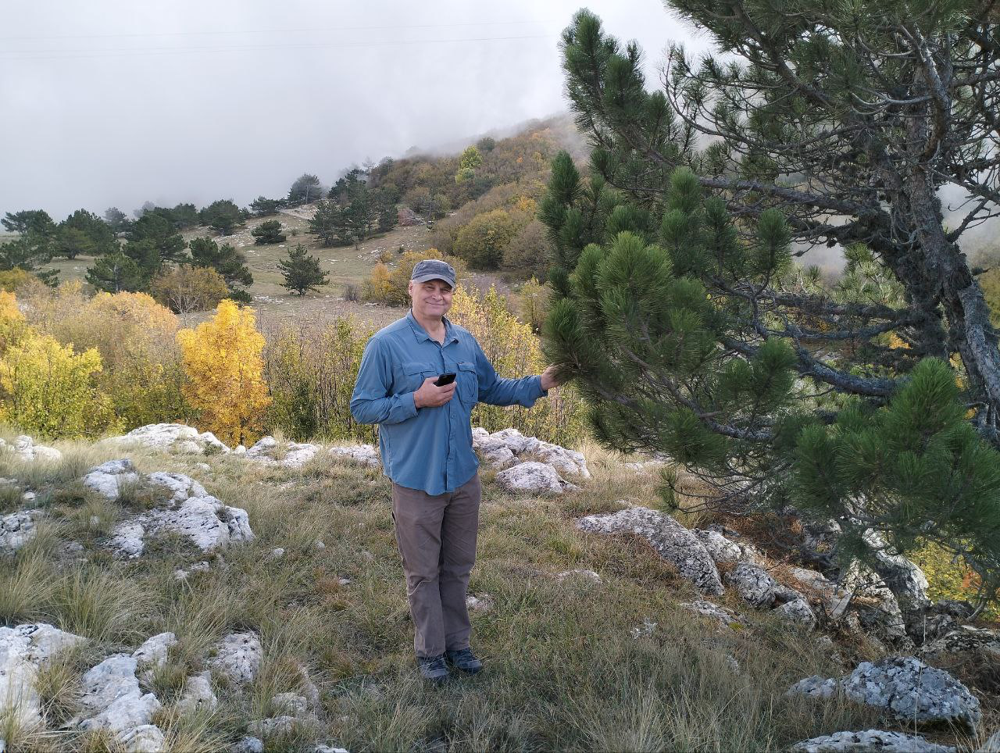
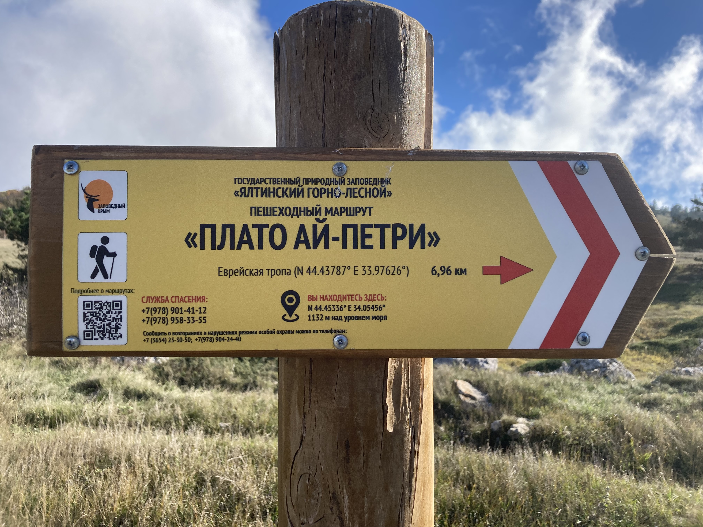
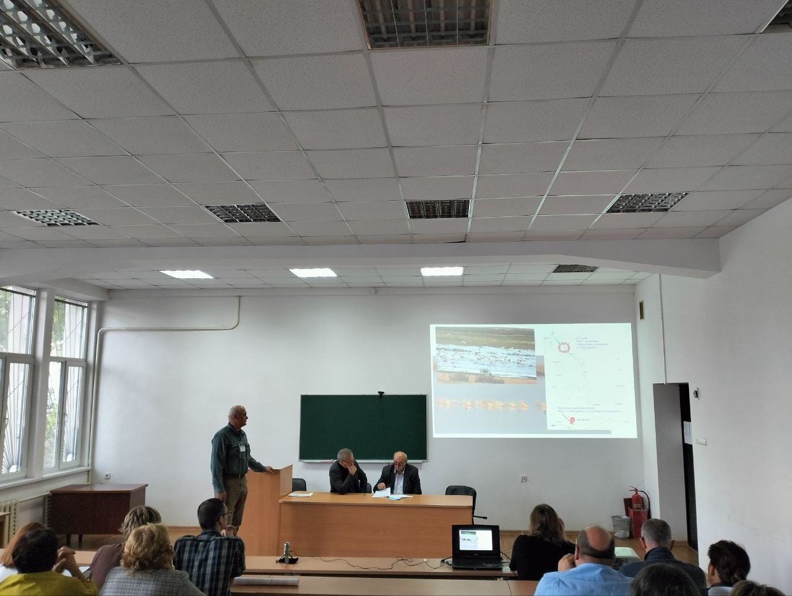
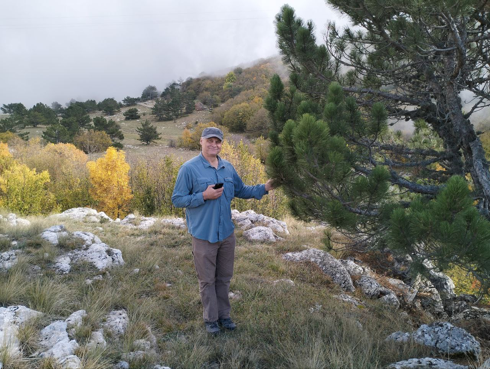
 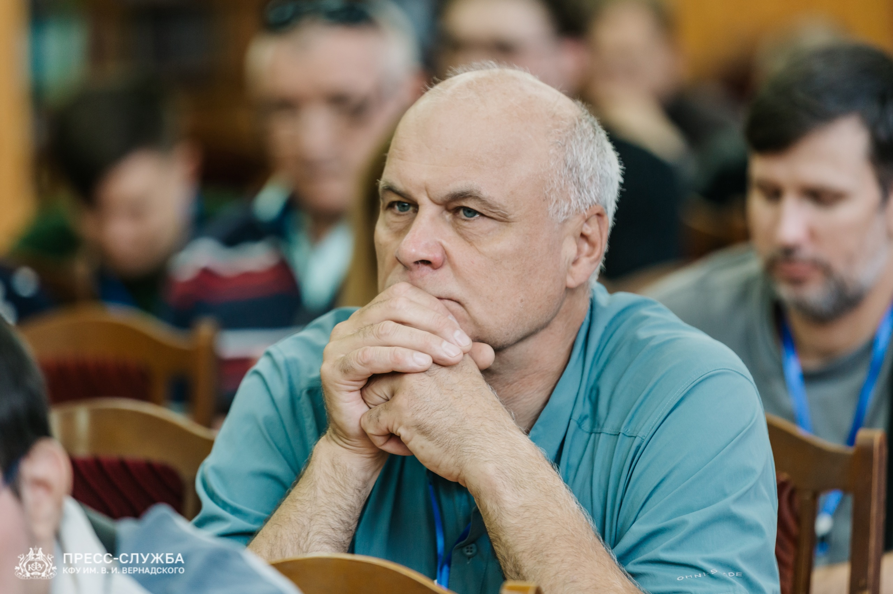
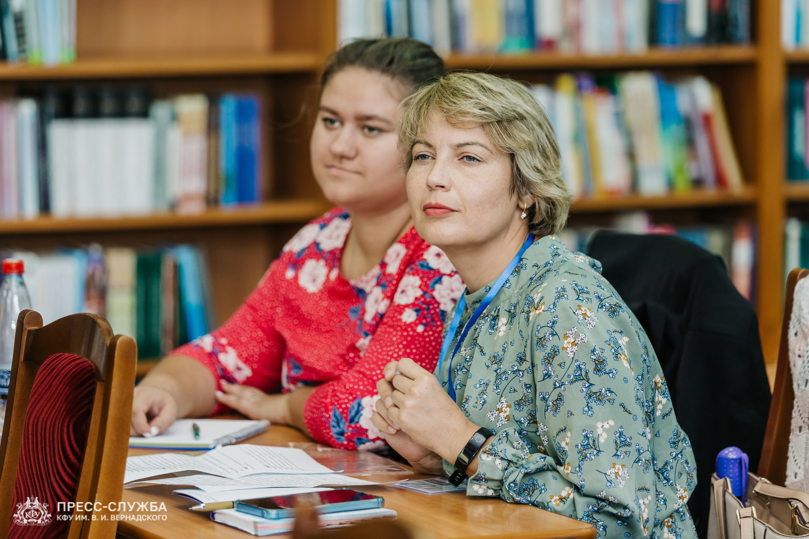
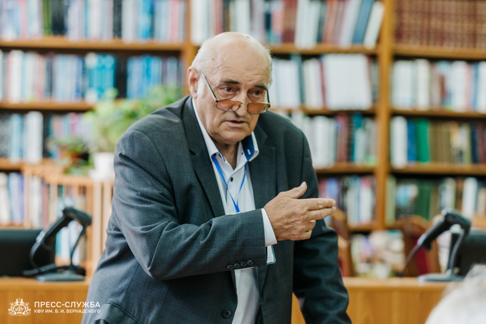
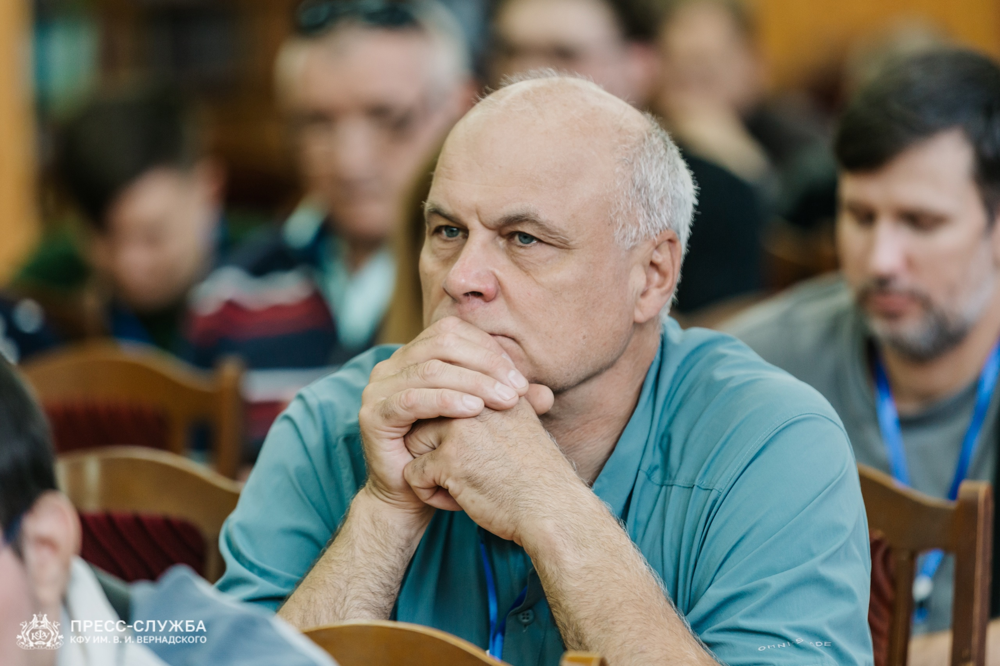
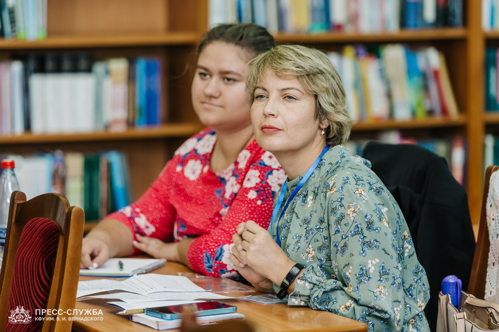
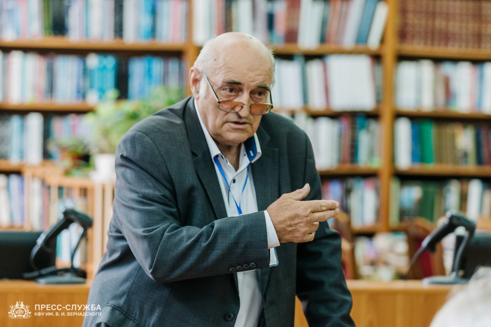